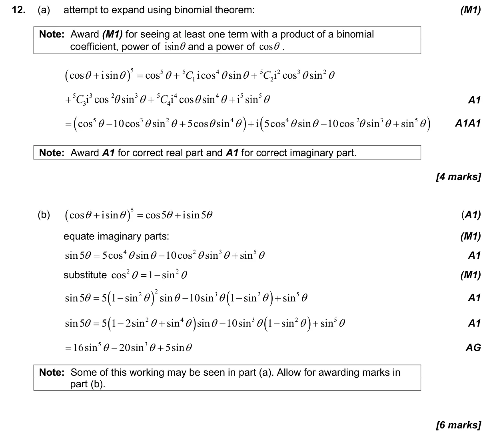
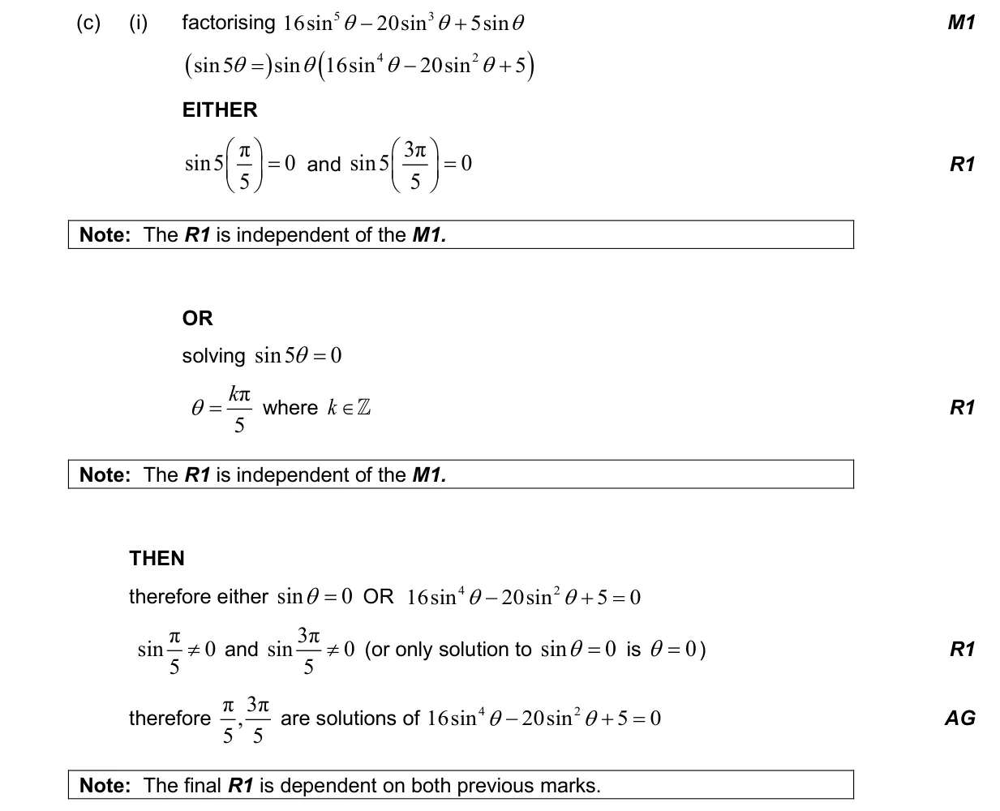

17 marks P1 TZ2 Section B No calculator 3.8 Solving trigonometric equations2.7 Solutions of quadratic equations and inequalities, discriminant and nature of roots1.14 Conjugate roots, De Moivre's theorem, powers and roots of complex numbers3.6 Pythagorean identity and double angles1.9 Binomial theorem1.12 Complex numbers in Cartesian form and the complex plane Question Hide breakdown abc Markscheme 